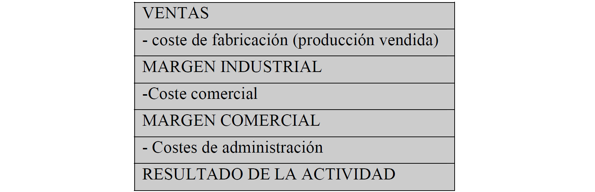

El sistema de contabilidad por secciones🔗
Podemos dividir el análisis de costes en las siguientes cuatro etapas o fases:
- Identificación de la actividad de la empresa y sus características
- Identificar el coste de los diferentes factores en cada centro
- Imputación del coste de los factores al producto
- Cálculo de márgenes
Márgenes

- El margen industrial es la diferencia entre los ingresos por las ventas y el coste de las mismas. El inventario de los productos terminados nos proporciona esta información. Es habitual que el margen se determine en términos porcentuales sobre el propio coste.
- El margen comercial, es la diferencia entre el margen y los costes de comercialización.
- Resultado de la explotación: se obtiene detrayendo del margen comercial los costes de administración y generales (seguridad, limpieza..)
- Resultado del ejercicio antes de impuestos: se determina restando al resultado anterior los resultados financieros.
Los centros🔗
Centro de compras (aprovisionamiento)- En él se realizan las tareas de recibir, almacenar y suministrar todas las materias primas o existencias comerciales. Ejemplo de costes: personal de almacén, compras, alquileres, electricidad, amortizaciones, vigilancia.
Centro de producción / fabricación / transformación- En él se realizan tareas típicas del proceso productivo. Ejemplo de costes: gastos de personal y amortizaciones.
Centro de venta- En él se realiza la actividad típica de comercialización de productos terminados. Ejemplo de costes: tareas de marketing, publicidad
Centro de administración- En él se realizan a cabo tareas de contabilidad y facturación.
Problemas🔗
- Si hay interrelaciones entre distintas secciones se establecerá un criterio de reparto previo.
- El autoconsumo no se repercute, se puede eliminar.
Valoración de la producción en curso🔗
Existen varios métodos, cada uno se podrá aplicar de forma más eficaz dependiendo de la tipología del proceso productivo (anque el más utilizado es el de la producción equivalente).
Métodos de valoración de la producción en curso🔗
Métodos simples- Se basan en la apreciaciíon subjetiva del grado de desarrollo y estimando el consumo de factores. Ej: parece que el bote de gel está al 80%
Métodos establecidos para la producción continua- Valora la producción en curso teninedo en cuenta el tiempo transcurrido desde el inicio del proceso, la cantidad consumida de un factor, el consumo de materiales... Sólo se puede aplicar si tenemos producción continua.
Basados en producción equivalente- Establece un grado de avance tomando como referencia una equivalencia respecto del producto ya acabado. Se establece una equivalencia para cada coste que comprende el coste de producción.
Se basa en un porcentaje de unidades equivalentes terminadas. Este porcentaje se basa en el grado de terminación.
Note
La producción terminada será el resultado de terminar las unidades equivalentes del proceso anterior más las unidades empezadas y terminadas en el proceso restando las unidades equivalentes que queden al final de dicho proceso.
Producción equivalente🔗
Distinguimos entre producción terminada y producción realizada.
La producción terminada será el resultado de terminar las unidades equivalentes del proceso anterior más las unidades empezadas y terminadas en el proceso y, restar las unidades equivalentes que queden al final de dicho proceso
la producción terminada será el resultado de terminar las unidades equivalentes del proceso anterior más las unidades empezadas y terminadas en el proceso y, restar las unidades equivalentes que queden al final de dicho proceso
Hay un excel en el campus virtual de un ejemplo que no entiendo.
Se tiene que cumplir Existencias iniciales + Producción industrial o realizada = Existencias finales + Coste de la producción
Cómo afrontar las mermas🔗
Distinguimos entre:
- Productos dañados: se venden a menor precio o se desechan
- Productos defectuosos: pueden ser recuperados mediante algún trabajo adicional
- Materiales de desecho: no pueden ser recuperados pero pueden tener un precio de venta (se asimilan a los subproductos)
- Materiales de desperdicio: no tienen ningún valor.
Son unidades de inventario que desaparecen o aparecen estropeadas.
Resolución del ICAC
Se distingue entre producción dañada normal y atípica. La normal será coste de producción (como un coste indirecto) y la atípica será gasto del ejercicio.
Normal vs atípica
- Normal: previsto, tolerable
- Atípico: imprevisto, no tolerable
Mermas en productos terminados
Si las mermas se han producido en los productos terminados no se puede clasificar como coste de producción. Mermas de productos terminados se considera una pérdida del ejercicio.
Indemnizaciones
Son ingresos del ejercicio, no reducen el coste de producción.
Ex. In. + Prod. industrial = Ex. Fin. + Coste de la producción + Unidades perdidas.